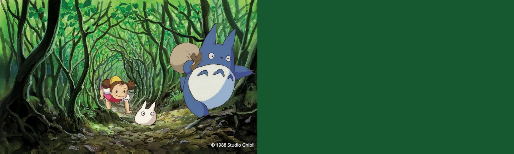
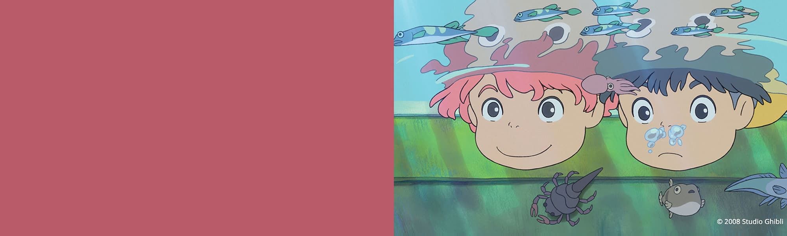
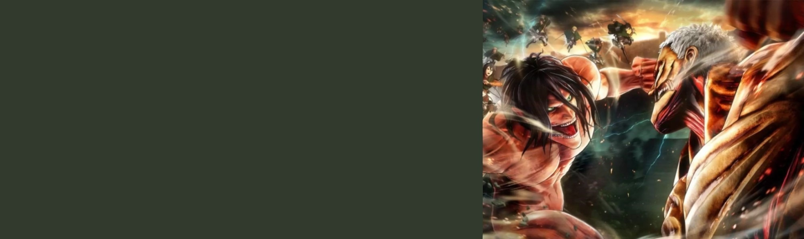

Spirited Away

Princess Mononoke


Two young girls, 10-year-old Satsuki and her 4-year-old sister Mei, move into a house in the country with their father to be closer to their hospitalized mother. Satsuki and Mei discover that the nearby forest is inhabited by magical creatures called Totoros (pronounced toe-toe-ro). They soon befriend these Totoros, and have several magical adventures.

The daughter of a masterful wizard and a sea goddess, Ponyo uses her father's magic to transform herself into a young girl and quickly falls in love with Sosuke, but the use of such powerful sorcery causes a dangerous imbalance in the world.

Attack on Titan is set in a world where humanity lives inside cities surrounded by enormous Walls that protect them from Titans, gigantic humanoid creatures who devour humans seemingly without reason. The story centers around Eren Jaeger and his childhood friends Mikasa Ackermann and Armin Arlelt whose lives are changed forever after the appearance of a Colossal Titan, which brings about the destruction of their home town and the death of Eren's mother. Vowing revenge and to reclaim the world from the Titans, Eren, Mikasa, and Armin join the Scout Regiment, an elite group of soldiers who fight Titans outside the Walls.